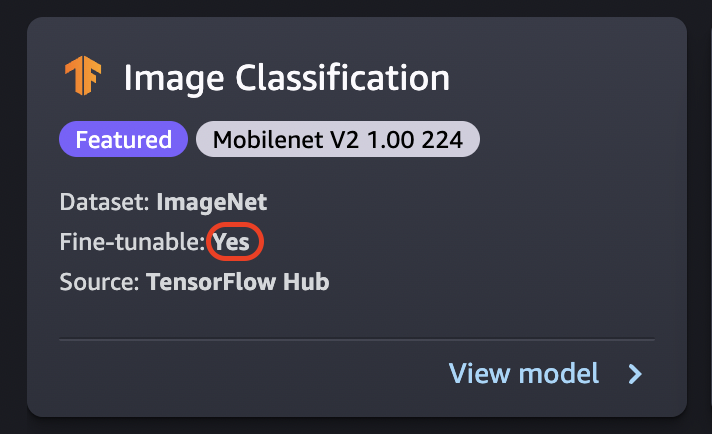

Fine-Tune a Model
Fine-tuning trains a pretrained model on a new dataset without training from scratch. This process, also known as transfer learning, can produce accurate models with smaller datasets and less training time. You can fine-tune a model if its card shows a fine-tunable attribute set to Yes.

Fine-Tuning data source
When you fine-tune a model, you can use the default dataset or choose your own data, which is located in an Amazon S3 bucket.
To browse the buckets available to you, choose Find S3 bucket. These buckets are limited by the permissions used to set up your Studio account. You can also specify an Amazon S3 URI by choosing Enter Amazon S3 bucket location.

Tip
To find out how to format the data in your bucket, choose Learn more. The description section for the model has detailed information about inputs and outputs.
For text models:
-
The bucket must have a data.csv file.
-
The first column must be a unique integer for the class label. For example:
1,2,3,4,n -
The second column must be a string.
-
The second column should have the corresponding text that matches the type and language for the model.
For vision models:
-
The bucket must have as many subdirectories as the number of classes.
-
Each subdirectory should contain images that belong to that class in .jpg format.
Note
The Amazon S3 bucket must be in the same AWS Region where you're running SageMaker Studio because SageMaker doesn't allow cross-Region requests.
Fine-Tuning deployment configuration
The p3 family is recommended as the fastest for deep learning training, and this is recommended for fine-tuning a model. The following chart shows the number of GPUs in each instance type. There are other available options that you can choose from, including p2 and g4 instance types.
| Instance type | GPUs |
| p3.2xlarge | 1 |
| p3.8xlarge | 4 |
| p3.16xlarge | 8 |
| p3dn.24xlarge | 8 |
Hyperparameters
You can customize the hyperparameters of the training job that are used to fine-tune the model. The hyperparameters available for each fine-tunable model differ depending on the model. For information on each available hyperparameter, reference the hyperparameters documentation for the model of your choosing in Use Amazon SageMaker Built-in Algorithms or Pre-trained Models. For example, see Image Classification - TensorFlow Hyperparameters for details on the fine-tunable Image Classification - TensorFlow hyperparameters.
If you use the default dataset for text models without changing the hyperparameters, you get a nearly identical model as a result. For vision models, the default dataset is different from the dataset used to train the pretrained models, so your model is different as a result.
The following hyperparameters are common among models:
-
Epochs – One epoch is one cycle through the entire dataset. Multiple intervals complete a batch, and multiple batches eventually complete an epoch. Multiple epochs are run until the accuracy of the model reaches an acceptable level, or when the error rate drops below an acceptable level.
-
Learning rate – The amount that values should be changed between epochs. As the model is refined, its internal weights are being nudged and error rates are checked to see if the model improves. A typical learning rate is 0.1 or 0.01, where 0.01 is a much smaller adjustment and could cause the training to take a long time to converge, whereas 0.1 is much larger and can cause the training to overshoot. It is one of the primary hyperparameters that you might adjust for training your model. Note that for text models, a much smaller learning rate (5e-5 for BERT) can result in a more accurate model.
-
Batch size – The number of records from the dataset that is to be selected for each interval to send to the GPUs for training.
In an image example, you might send out 32 images per GPU, so 32 would be your batch size. If you choose an instance type with more than one GPU, the batch is divided by the number of GPUs. Suggested batch size varies depending on the data and the model that you are using. For example, how you optimize for image data differs from how you handle language data.
In the instance type chart in the deployment configuration section, you can see the number of GPUs per instance type. Start with a standard recommended batch size (for example, 32 for a vision model). Then, multiply this by the number of GPUs in the instance type that you selected. For example, if you're using a
p3.8xlarge, this would be 32(batch size) multiplied by 4 (GPUs), for a total of 128, as your batch size adjusts for the number of GPUs. For a text model like BERT, try starting with a batch size of 64, and then reduce as needed.
Training output
When the fine-tuning process is complete, JumpStart provides information about the
model: parent model, training job name, training job ARN, training time, and output path.
The output path is where you can find your new model in an Amazon S3 bucket. The folder
structure uses the model name that you provided and the model file is in an
/output subfolder and it's always named model.tar.gz.
Example: s3://bucket/model-name/output/model.tar.gz
Configure default values for model training
You can configure default values for parameters such as IAM roles, VPCs, and KMS keys to pre-populate for JumpStart model deployment and training. For more information, see, Configure default values for JumpStart models.